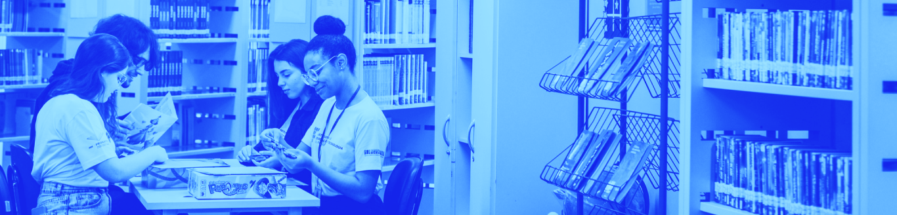

Biblioteca de Recursos
Agora, você terá a oportunidade de acessar uma Biblioteca de Materiais Complementares para aprofundamento nos conteúdos específicos trazidos nesta Unidade, com livros, textos e artigos relacionados aos temas trabalhados. Este recurso está disposto em forma de estante virtual, com botões interativos que darão acesso aos diferentes materiais propostos. Aproveite!

João Oliveira Ramos Neto
#EnsinoTécnico
#EvasãoEscolar
#Permanência
#Êxito
Instituto Unibanco
#EvasãoEscolar
#AbandonoEscolar
#Permanência.
João Germano Rosinke
Edione Teixeira de Carvalho
Gisele Cristina Lopes Rosinke
Guilherme José Santini da Silva
#EducaçãoSuperior
#InstitutoFederal
#ExpansãodeVagas.
Deloíze Lorenzet
Nayara Pansera Balbinot
Neudy Alexandro Demichei
Aléxia Islabão dos Santos
Janaína Turcato Zanchin
Larissa Brandelli Bucco
Lucas Coradini
Priscila de Lima Verdum
#Permanência
#Êxito
#ProcessosdeEnsino-Aprendizagem
#SucessoEstudantil
Liane Nakada
Rodrigo Urban
#EaD
#EPT
#Evasão
#PerfildoAluno.
Cristiane Milliorin
Maria de Fátima Rodrigues Pereira
 #EJA-EPT
#EJA-EPT
#PolíticasdeAssistênciaEstudantil #InstitutosFederais

IFSC
#Acesso
#Permanência
#Êxito
#Planejamento
Ronison Oliveira da Silva
Dauana Berndt Inácio
Luiz Henrique Fontão
Daniel Nascimento-e-Silva
#Raciocínio
#Problemas
#Contextualização
#Criatividade
#ArtigosCientíficos